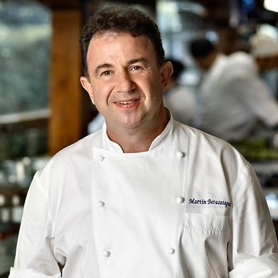
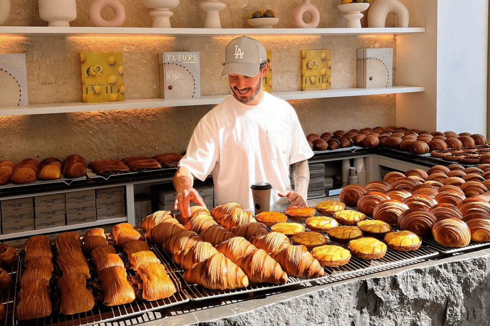
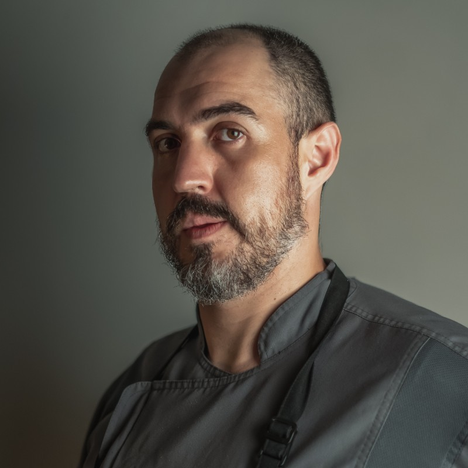

Martin Berasategui
Martín Berasategui nace en 1960 en San Sebastián. Su formación como cocinero y gran parte de su vida se relacionan con el Bodegón Alejandro, popular casa de comidas regentada por sus padres y su tía, situada en la parte vieja de San Sebastián, en el que obtuvo su primera Estrella Michelin
Link de la informacionCedric Grolet
Cedric Grolet a los 11 años ya empuñaba con desenvoltura el batidor de alambre en la mano. Trabajaba en la cocina del hotel de sus abuelos en Andrézieux-Bouthéon, en el Valle del Loira. A los 13, se convirtió oficialmente en un aprendiz de cocina y a los 14, entró en la escuela de confitería. A partir de los 15 comenzó a coleccionar una serie de premios – incluyendo el National Trophy for Sugar Art . También apasionado por el diseño, Cedric tomó clases de arte hasta los 18 años de edad
Link de la informacionSantiago Fernandez
Santiago no sabía que iba a dedicarse a la gastronomía. De chico se imaginaba un futuro como músico o como caricaturista, hasta a sus 15 años, cuando motivado por hacer un extra para sus vacaciones, le surgió la idea de meterse en una cocina. “Le pregunté a mi mamá si ser chef era buena idea y me dijo que sí, que uno puede lograr hacer carrera”, cuenta. Ese visto bueno le bastó para saber que quería aprender mucho y en el mejor lugar. Así fue como llegó a Le Chandelier, un restaurante de cocina francesa muy clásico, en San José. Fue Claudio Dubuis, chef del lugar, el que lo formó, de la misma manera que lo habían formado a él a sus 15 años. Desde entonces, nunca paró de cocinar. Su primera oportunidad laboral en el exterior se le dio en Dubai, donde trabajó con cocineros de todo el mundo. Fue ahí donde tomó conciencia de su desconocimiento sobre los productos autóctonos de Costa Rica, y que incluso, muy a su pesar, no creía demasiado en su potencial.
Link de la informacion